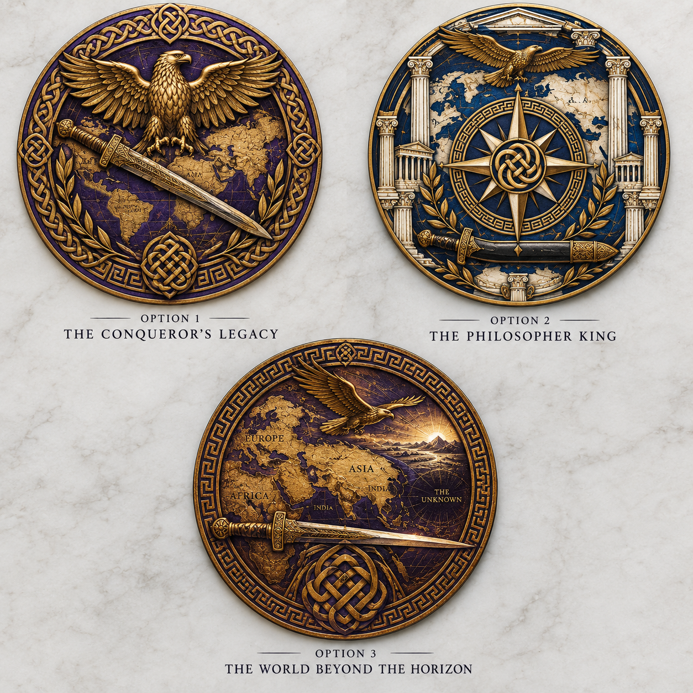

This activity asked us to prompt AI to act as any fictional or nonfictional character in the history of the universe in order to interview the AI and find more about the figure. My group chose Alexander the Great and we used ChatGPT for all of our generative content. We then used the information from the interview to prompt AI to design three coaster concepts inspired by this figure, incorporating historical symbols such as a sword, eagle, ancient map, and Gordian Knot. The AI was then asked to visualize each concept as a realistic coaster-and-mug design, then compared the designs and selected the strongest based on creativity, visual appeal, and historical symbolism. Overall, this was a fun, creative activity to start off the year and our involvement with AI.